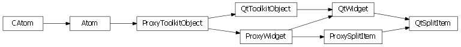
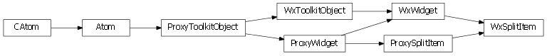

Bases: enaml.widgets.widget.Widget
A widget which can be used as an item in a Splitter.
A SplitItem is a widget which can be used as a child of a Splitter widget. It can have at most a single child widget which is an instance of Container.
The stretch factor for this item. The stretch factor determines how much an item is resized relative to its neighbors when the splitter space is allocated.
Whether or not the item can be collapsed to zero width by the user. This holds regardless of the minimum size of the item.
This is a deprecated attribute. It should no longer be used.
A reference to the ProxySplitItem object.

Bases: enaml.qt.qt_widget.QtWidget, enaml.widgets.split_item.ProxySplitItem
A Qt implementation of an Enaml ProxySplitItem.
A reference to the widget created by the proxy.

Bases: enaml.wx.wx_widget.WxWidget, enaml.widgets.split_item.ProxySplitItem
A Wx implementation of an Enaml ProxySplitItem.
A reference to the widget created by the proxy.